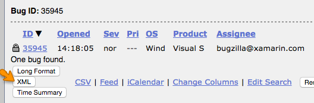

Search in Bugzilla for the bug(s) you wish to convert. You can search for just one bug or multiple bugs. For example you can search by bug number:
Click the "XML" button at the bottom of the bug list to view the XML version of the list:
(You could instead use the XML link on an individual bug page, but that XML can get quite large because it includes the content of every attachment on the bug. The output of the XML button on the "buglist.cgi" page is easier to work with because it omits the content of the attachments.)
Use the web browser to view the source of the resulting page. This is important because some browsers will by default automatically unescape XML escape characters like & when displaying the results page, and that will break the XML parsing in step 5.
Copy the contents of the source page and paste it here:
Click this button:
Now copy the generated YAML below (including the "---" lines) into new files under _bugs/NNNNN.md, where the name of each file precisely matches the bug number. Split each bug into its own file. See the comments in the _template.md file for more information about the the various field names.
{kind=link}